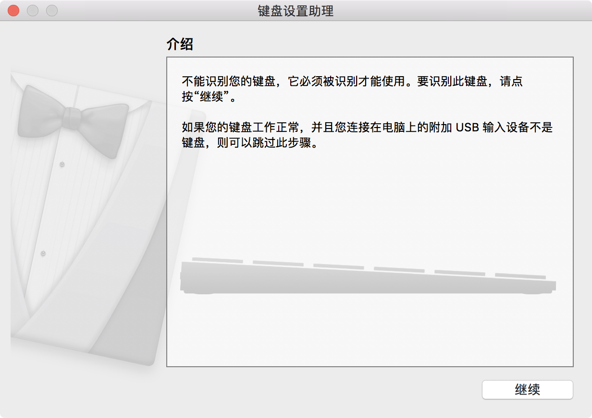
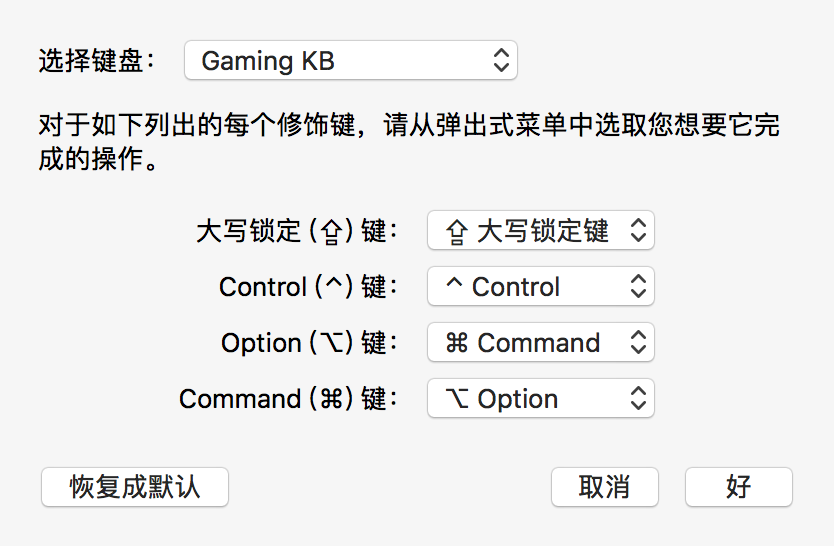
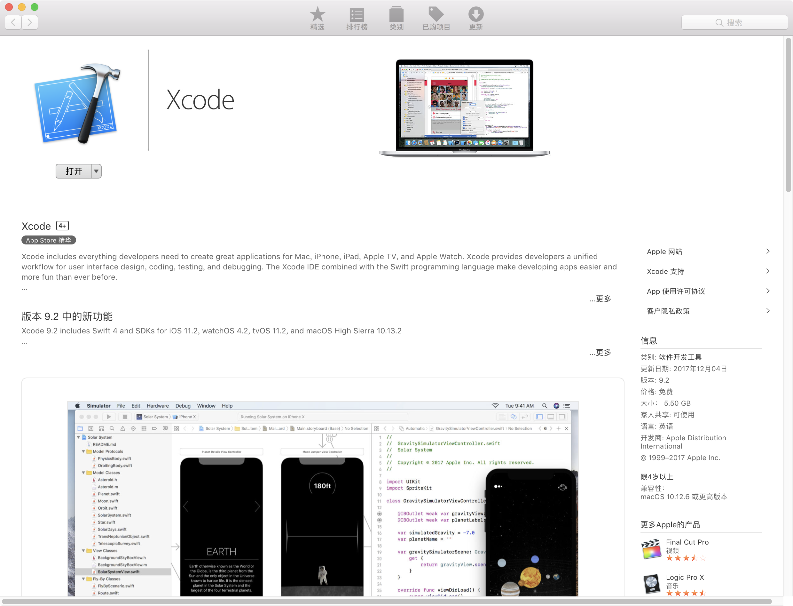
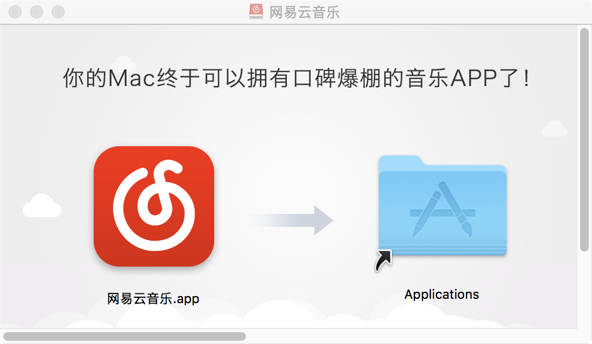
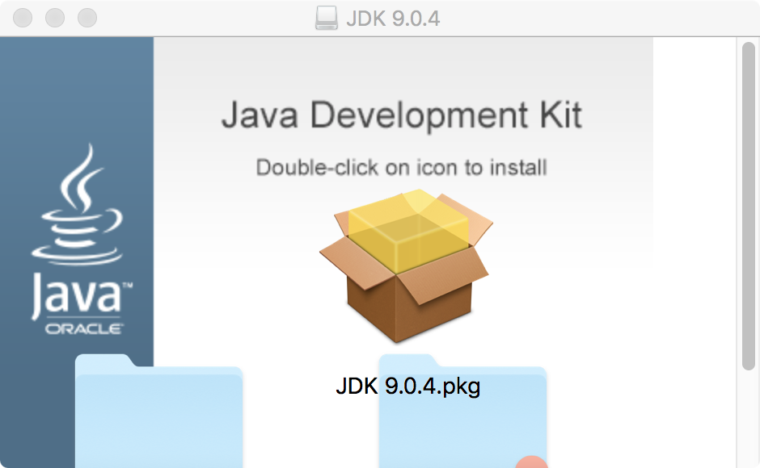
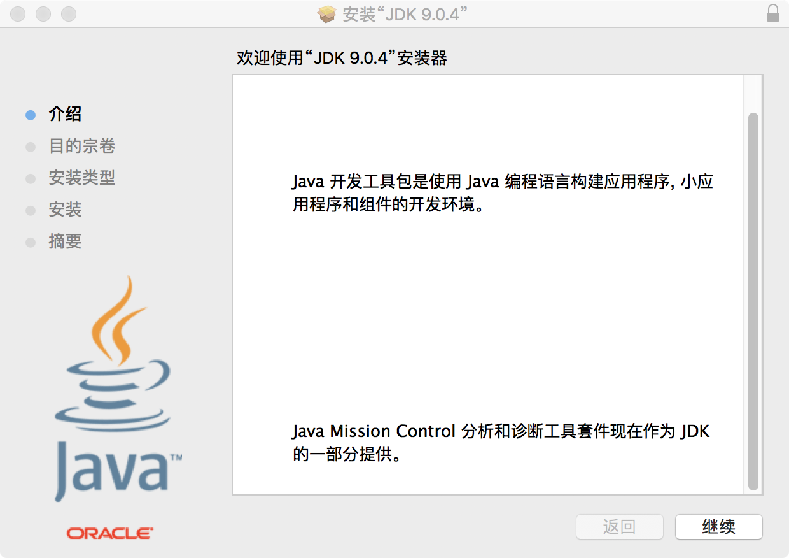
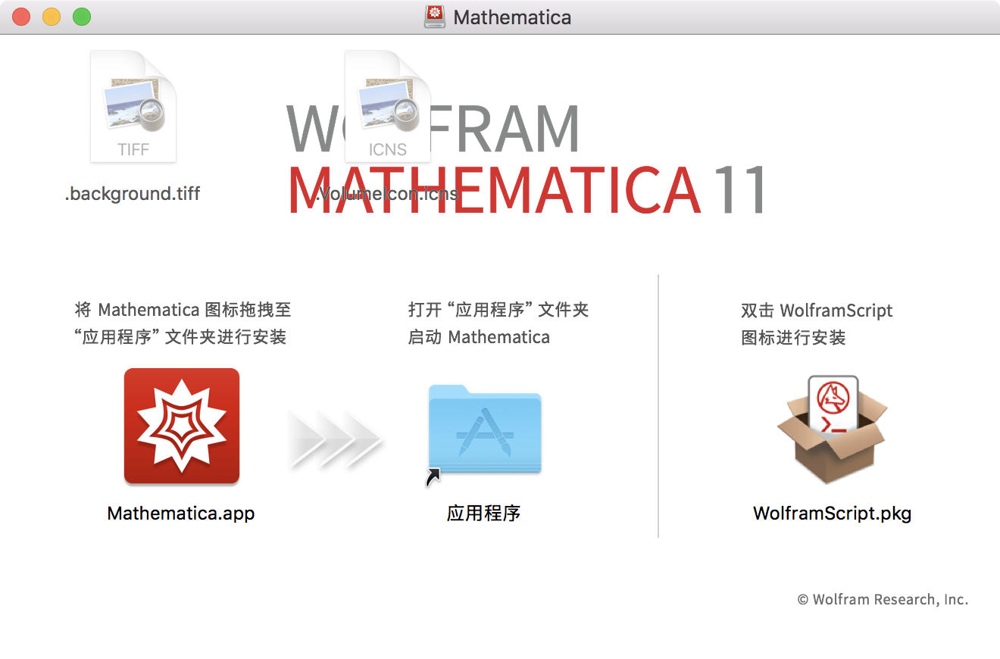

<!DOCTYPE html>
<html style="display: none;" lang="zh">
    <head>
    <meta charset="utf-8">
    <!--
        © Material Theme
        https://github.com/viosey/hexo-theme-material
        Version: 1.5.2 -->
    <script>
        window.materialVersion = "1.5.2"
        // Delete localstorage with these tags
        window.oldVersion = [
            'codestartv1',
            '1.3.4',
            '1.4.0',
            '1.4.0b1',
            '1.5.0'
        ]
    </script>

    <!-- dns prefetch -->
    <meta http-equiv="x-dns-prefetch-control" content="on">


    <!-- Meta & Info -->
    <meta http-equiv="X-UA-Compatible" content="IE=Edge,chrome=1">
    <meta name="renderer" content="webkit">
    <meta name="viewport" content="width=device-width, initial-scale=1, user-scalable=no">

    <!-- Title -->
    
    <title>
        
            Mac迁移指南 | 
        
        xsun&#39;s blog
    </title>

    <!-- Favicons -->
    <link rel="icon shortcut" type="image/ico" href="/img/favicon.png">
    <link rel="icon" href="/img/favicon.png">

    <meta name="format-detection" content="telephone=no"/>
    <meta name="description" itemprop="description" content="">
    <meta name="keywords" content="">
    <meta name="theme-color" content="#0097A7">

    <!-- Disable Fucking Bloody Baidu Tranformation -->
    <meta http-equiv="Cache-Control" content="no-transform" />
    <meta http-equiv="Cache-Control" content="no-siteapp" />

    <!--[if lte IE 9]>
        <link rel="stylesheet" href="/css/ie-blocker.css">

        
            <script src="/js/ie-blocker.zhCN.js"></script>
        
    <![endif]-->

    <!-- Import lsloader -->
    <script>(function(){window.lsloader={jsRunSequence:[],jsnamemap:{},cssnamemap:{}};lsloader.removeLS=function(a){try{localStorage.removeItem(a)}catch(b){}};lsloader.setLS=function(a,c){try{localStorage.setItem(a,c)}catch(b){}};lsloader.getLS=function(a){var c="";try{c=localStorage.getItem(a)}catch(b){c=""}return c};versionString="/*"+(window.materialVersion||"unknownVersion")+"*/";lsloader.clean=function(){try{var b=[];for(var a=0;a<localStorage.length;a++){b.push(localStorage.key(a))}b.forEach(function(e){var f=lsloader.getLS(e);if(window.oldVersion){var d=window.oldVersion.reduce(function(g,h){return g||f.indexOf("/*"+h+"*/")!==-1},false);if(d){lsloader.removeLS(e)}}})}catch(c){}};lsloader.clean();lsloader.load=function(f,a,b,d){if(typeof b==="boolean"){d=b;b=undefined}d=d||false;b=b||function(){};var e;e=this.getLS(f);if(e&&e.indexOf(versionString)===-1){this.removeLS(f);this.requestResource(f,a,b,d);return}if(e){var c=e.split(versionString)[0];if(c!=a){console.log("reload:"+a);this.removeLS(f);this.requestResource(f,a,b,d);return}e=e.split(versionString)[1];if(d){this.jsRunSequence.push({name:f,code:e});this.runjs(a,f,e)}else{document.getElementById(f).appendChild(document.createTextNode(e));b()}}else{this.requestResource(f,a,b,d)}};lsloader.requestResource=function(b,e,a,c){var d=this;if(c){this.iojs(e,b,function(h,f,g){d.setLS(f,h+versionString+g);d.runjs(h,f,g)})}else{this.iocss(e,b,function(f){document.getElementById(b).appendChild(document.createTextNode(f));d.setLS(b,e+versionString+f)},a)}};lsloader.iojs=function(d,b,g){var a=this;a.jsRunSequence.push({name:b,code:""});try{var f=new XMLHttpRequest();f.open("get",d,true);f.onreadystatechange=function(){if(f.readyState==4){if((f.status>=200&&f.status<300)||f.status==304){if(f.response!=""){g(d,b,f.response);return}}a.jsfallback(d,b)}};f.send(null)}catch(c){a.jsfallback(d,b)}};lsloader.iocss=function(f,c,h,a){var b=this;try{var g=new XMLHttpRequest();g.open("get",f,true);g.onreadystatechange=function(){if(g.readyState==4){if((g.status>=200&&g.status<300)||g.status==304){if(g.response!=""){h(g.response);a();return}}b.cssfallback(f,c,a)}};g.send(null)}catch(d){b.cssfallback(f,c,a)}};lsloader.iofonts=function(f,c,h,a){var b=this;try{var g=new XMLHttpRequest();g.open("get",f,true);g.onreadystatechange=function(){if(g.readyState==4){if((g.status>=200&&g.status<300)||g.status==304){if(g.response!=""){h(g.response);a();return}}b.cssfallback(f,c,a)}};g.send(null)}catch(d){b.cssfallback(f,c,a)}};lsloader.runjs=function(f,c,e){if(!!c&&!!e){for(var b in this.jsRunSequence){if(this.jsRunSequence[b].name==c){this.jsRunSequence[b].code=e}}}if(!!this.jsRunSequence[0]&&!!this.jsRunSequence[0].code&&this.jsRunSequence[0].status!="failed"){var a=document.createElement("script");a.appendChild(document.createTextNode(this.jsRunSequence[0].code));a.type="text/javascript";document.getElementsByTagName("head")[0].appendChild(a);this.jsRunSequence.shift();if(this.jsRunSequence.length>0){this.runjs()}}else{if(!!this.jsRunSequence[0]&&this.jsRunSequence[0].status=="failed"){var d=this;var a=document.createElement("script");a.src=this.jsRunSequence[0].path;a.type="text/javascript";this.jsRunSequence[0].status="loading";a.onload=function(){d.jsRunSequence.shift();if(d.jsRunSequence.length>0){d.runjs()}};document.body.appendChild(a)}}};lsloader.tagLoad=function(b,a){this.jsRunSequence.push({name:a,code:"",path:b,status:"failed"});this.runjs()};lsloader.jsfallback=function(c,b){if(!!this.jsnamemap[b]){return}else{this.jsnamemap[b]=b}for(var a in this.jsRunSequence){if(this.jsRunSequence[a].name==b){this.jsRunSequence[a].code="";this.jsRunSequence[a].status="failed";this.jsRunSequence[a].path=c}}this.runjs()};lsloader.cssfallback=function(e,c,b){if(!!this.cssnamemap[c]){return}else{this.cssnamemap[c]=1}var d=document.createElement("link");d.type="text/css";d.href=e;d.rel="stylesheet";d.onload=d.onerror=b;var a=document.getElementsByTagName("script")[0];a.parentNode.insertBefore(d,a)};lsloader.runInlineScript=function(c,b){var a=document.getElementById(b).innerText;this.jsRunSequence.push({name:c,code:a});this.runjs()}})();</script>

    <!-- Import queue -->
    <script>function Queue(){this.dataStore=[];this.offer=b;this.poll=d;this.execNext=a;this.debug=false;this.startDebug=c;function b(e){if(this.debug){console.log("Offered a Queued Function.")}if(typeof e==="function"){this.dataStore.push(e)}else{console.log("You must offer a function.")}}function d(){if(this.debug){console.log("Polled a Queued Function.")}return this.dataStore.shift()}function a(){var e=this.poll();if(e!==undefined){if(this.debug){console.log("Run a Queued Function.")}e()}}function c(){this.debug=true}}var queue=new Queue();</script>

    <!-- Import CSS -->
    
        <style id="material_css"></style><script>if(typeof window.lsLoadCSSMaxNums === "undefined")window.lsLoadCSSMaxNums = 0;window.lsLoadCSSMaxNums++;lsloader.load("material_css","/css/material.min.css?Z7a72R1E4SxzBKR/WGctOA==",function(){if(typeof window.lsLoadCSSNums === "undefined")window.lsLoadCSSNums = 0;window.lsLoadCSSNums++;if(window.lsLoadCSSNums == window.lsLoadCSSMaxNums)document.documentElement.style.display="";}, false)</script>
        <style id="style_css"></style><script>if(typeof window.lsLoadCSSMaxNums === "undefined")window.lsLoadCSSMaxNums = 0;window.lsLoadCSSMaxNums++;lsloader.load("style_css","/css/style.min.css?MKetZV3cUTfDxvMffaOezg==",function(){if(typeof window.lsLoadCSSNums === "undefined")window.lsLoadCSSNums = 0;window.lsLoadCSSNums++;if(window.lsLoadCSSNums == window.lsLoadCSSMaxNums)document.documentElement.style.display="";}, false)</script>

        

    

    

    <!-- Config CSS -->

<!-- Other Styles -->
<style>
  body, html {
    font-family: Roboto, "Helvetica Neue", Helvetica, "PingFang SC", "Hiragino Sans GB", "Microsoft YaHei", "微软雅黑", Arial, sans-serif;
    overflow-x: hidden !important;
  }
  
  code {
    font-family: Consolas, Monaco, 'Andale Mono', 'Ubuntu Mono', monospace;
  }

  a {
    color: #00838F;
  }

  .mdl-card__media,
  #search-label,
  #search-form-label:after,
  #scheme-Paradox .hot_tags-count,
  #scheme-Paradox .sidebar_archives-count,
  #scheme-Paradox .sidebar-colored .sidebar-header,
  #scheme-Paradox .sidebar-colored .sidebar-badge{
    background-color: #0097A7 !important;
  }

  /* Sidebar User Drop Down Menu Text Color */
  #scheme-Paradox .sidebar-colored .sidebar-nav>.dropdown>.dropdown-menu>li>a:hover,
  #scheme-Paradox .sidebar-colored .sidebar-nav>.dropdown>.dropdown-menu>li>a:focus {
    color: #0097A7 !important;
  }

  #post_entry-right-info,
  .sidebar-colored .sidebar-nav li:hover > a,
  .sidebar-colored .sidebar-nav li:hover > a i,
  .sidebar-colored .sidebar-nav li > a:hover,
  .sidebar-colored .sidebar-nav li > a:hover i,
  .sidebar-colored .sidebar-nav li > a:focus i,
  .sidebar-colored .sidebar-nav > .open > a,
  .sidebar-colored .sidebar-nav > .open > a:hover,
  .sidebar-colored .sidebar-nav > .open > a:focus,
  #ds-reset #ds-ctx .ds-ctx-entry .ds-ctx-head a {
    color: #0097A7 !important;
  }

  .toTop {
    background: #757575 !important;
  }

  .material-layout .material-post>.material-nav,
  .material-layout .material-index>.material-nav,
  .material-nav a {
    color: #757575;
  }

  #scheme-Paradox .MD-burger-layer {
    background-color: #757575;
  }

  #scheme-Paradox #post-toc-trigger-btn {
    color: #757575;
  }

  .post-toc a:hover {
    color: #00838F;
    text-decoration: underline;
  }

</style>


<!-- Theme Background Related-->

    <style>
      body{
        background-color: #F5F5F5;
      }

      /* blog_info bottom background */
      #scheme-Paradox .material-layout .something-else .mdl-card__supporting-text{
        background-color: #fff;
      }
    </style>


<!-- Fade Effect -->

    <style>
      .fade {
        transition: all 800ms linear;
        -webkit-transform: translate3d(0,0,0);
        -moz-transform: translate3d(0,0,0);
        -ms-transform: translate3d(0,0,0);
        -o-transform: translate3d(0,0,0);
        transform: translate3d(0,0,0);
        opacity: 1;
      }

      .fade.out{
        opacity: 0;
      }
    </style>


<!-- Import Font -->
<!-- Import Roboto -->

    <link href="https://fonts.googleapis.com/css?family=Roboto:300,400,500" rel="stylesheet">


<!-- Import Material Icons -->


    <style id="material_icons"></style><script>if(typeof window.lsLoadCSSMaxNums === "undefined")window.lsLoadCSSMaxNums = 0;window.lsLoadCSSMaxNums++;lsloader.load("material_icons","/css/material-icons.css?pqhB/Rd/ab0H2+kZp0RDmw==",function(){if(typeof window.lsLoadCSSNums === "undefined")window.lsLoadCSSNums = 0;window.lsLoadCSSNums++;if(window.lsLoadCSSNums == window.lsLoadCSSMaxNums)document.documentElement.style.display="";}, false)</script>


    <!-- Import jQuery -->
    
        <script>lsloader.load("jq_js","/js/jquery.min.js?qcusAULNeBksqffqUM2+Ig==", true)</script>
    

    <!-- WebAPP Icons -->
    <meta name="mobile-web-app-capable" content="yes">
    <meta name="application-name" content="xsun&#39;s blog">
    <meta name="msapplication-starturl" content="https://xsun.io/2018/03/17/new-to-macOS/">
    <meta name="msapplication-navbutton-color" content="#0097A7">
    <meta name="apple-mobile-web-app-capable" content="yes">
    <meta name="apple-mobile-web-app-title" content="xsun&#39;s blog">
    <meta name="apple-mobile-web-app-status-bar-style" content="black">
    <link rel="apple-touch-icon" href="/img/favicon.png">

    <!-- Site Verification -->
    <meta name="google-site-verification" content="rxxr5kUZ9QUT1xiLl_LeQIm2AlQPK3-KF3m2IEEj1jw" />
    <meta name="baidu-site-verification" content="BYGSeBVRWy" />

    <!-- RSS -->
    
        
            <link rel=alternate type="application/rss+xml" href="rss2.xml">
        
    

    <!-- The Open Graph protocol -->
    <meta property="og:url" content="https://xsun.io/2018/03/17/new-to-macOS/">
    <meta property="og:type" content="blog">
    <meta property="og:title" content="Mac迁移指南 | xsun&#39;s blog">
    <meta property="og:image" content="/img/favicon.png">
    <meta property="og:description" content="">
    

    
        <meta property="article:published_time" content="Sat Mar 17 2018 12:49:42 GMT+0800">
        <meta property="article:modified_time" content="Sat Mar 17 2018 23:36:57 GMT+0800">
    

    <!-- The Twitter Card protocol -->
    <meta name="twitter:card" content="summary_large_image">

    <!-- Add canonical link for SEO -->
    
        <link rel="canonical" href="https://xsun.io/2018/03/17/new-to-macOS/index.html" />
    

    <!-- Structured-data for SEO -->
    
        


<script type="application/ld+json">
{
    "@context": "https://schema.org",
    "@type": "BlogPosting",
    "mainEntityOfPage": "https://xsun.io/2018/03/17/new-to-macOS/index.html",
    "headline": "Mac迁移指南",
    "datePublished": "Sat Mar 17 2018 12:49:42 GMT+0800",
    "dateModified": "Sat Mar 17 2018 23:36:57 GMT+0800",
    "author": {
        "@type": "Person",
        "name": "xsun2001",
        "image": {
            "@type": "ImageObject",
            "url": "/img/avatar.png"
        },
        "description": "xsun2001的博客"
    },
    "publisher": {
        "@type": "Organization",
        "name": "xsun&#39;s blog",
        "logo": {
            "@type":"ImageObject",
            "url": "/img/favicon.png"
        }
    },
    "keywords": "",
    "description": "",
}
</script>


    

    <!-- Analytics -->
    
    
    

    <!-- Custom Head -->
    

</head>


    
        <body id="scheme-Paradox" class="lazy">
            <div class="material-layout  mdl-js-layout has-drawer is-upgraded">
                

                <!-- Main Container -->
                <main class="material-layout__content" id="main">

                    <!-- Top Anchor -->
                    <div id="top"></div>

                    
                        <!-- Hamburger Button -->
                        <button class="MD-burger-icon sidebar-toggle">
                            <span class="MD-burger-layer"></span>
                        </button>
                    

                    <!-- Post TOC -->

    
    <!-- Back Button -->
    <!--
    <div class="material-back" id="backhome-div" tabindex="0">
        <a class="mdl-button mdl-js-button mdl-js-ripple-effect mdl-button--icon"
           href="#" onclick="window.history.back();return false;"
           target="_self"
           role="button"
           data-upgraded=",MaterialButton,MaterialRipple">
            <i class="material-icons" role="presentation">arrow_back</i>
            <span class="mdl-button__ripple-container">
                <span class="mdl-ripple"></span>
            </span>
        </a>
    </div>
    -->


    <!-- Left aligned menu below button -->
    
    
    <button id="post-toc-trigger-btn"
        class="mdl-button mdl-js-button mdl-button--icon">
        <i class="material-icons">format_list_numbered</i>
    </button>

    <ul class="post-toc-wrap mdl-menu mdl-menu--bottom-left mdl-js-menu mdl-js-ripple-effect" for="post-toc-trigger-btn" style="max-height:80vh; overflow-y:scroll;">
        <ol class="post-toc"><li class="post-toc-item post-toc-level-1"><a class="post-toc-link" href="#前言"><span class="post-toc-number">1.</span> <span class="post-toc-text">前言</span></a></li><li class="post-toc-item post-toc-level-1"><a class="post-toc-link" href="#几句忠告"><span class="post-toc-number">2.</span> <span class="post-toc-text">几句忠告</span></a></li><li class="post-toc-item post-toc-level-1"><a class="post-toc-link" href="#初来乍到"><span class="post-toc-number">3.</span> <span class="post-toc-text">初来乍到</span></a><ol class="post-toc-child"><li class="post-toc-item post-toc-level-2"><a class="post-toc-link" href="#第一印象"><span class="post-toc-number">3.1.</span> <span class="post-toc-text">第一印象</span></a><ol class="post-toc-child"><li class="post-toc-item post-toc-level-3"><a class="post-toc-link" href="#键盘"><span class="post-toc-number">3.1.1.</span> <span class="post-toc-text">键盘</span></a></li><li class="post-toc-item post-toc-level-3"><a class="post-toc-link" href="#Touch-Bar"><span class="post-toc-number">3.1.2.</span> <span class="post-toc-text">Touch Bar</span></a></li><li class="post-toc-item post-toc-level-3"><a class="post-toc-link" href="#触控板"><span class="post-toc-number">3.1.3.</span> <span class="post-toc-text">触控板</span></a></li><li class="post-toc-item post-toc-level-3"><a class="post-toc-link" href="#macOS"><span class="post-toc-number">3.1.4.</span> <span class="post-toc-text">macOS</span></a></li></ol></li><li class="post-toc-item post-toc-level-2"><a class="post-toc-link" href="#更进一步"><span class="post-toc-number">3.2.</span> <span class="post-toc-text">更进一步</span></a><ol class="post-toc-child"><li class="post-toc-item post-toc-level-3"><a class="post-toc-link" href="#安装软件"><span class="post-toc-number">3.2.1.</span> <span class="post-toc-text">安装软件</span></a><ol class="post-toc-child"><li class="post-toc-item post-toc-level-4"><a class="post-toc-link" href="#AppStore"><span class="post-toc-number">3.2.1.1.</span> <span class="post-toc-text">AppStore</span></a></li><li class="post-toc-item post-toc-level-4"><a class="post-toc-link" href="#其他方式"><span class="post-toc-number">3.2.1.2.</span> <span class="post-toc-text">其他方式</span></a></li><li class="post-toc-item post-toc-level-4"><a class="post-toc-link" href="#Homebrew"><span class="post-toc-number">3.2.1.3.</span> <span class="post-toc-text">Homebrew</span></a><ol class="post-toc-child"><li class="post-toc-item post-toc-level-5"><a class="post-toc-link" href="#安装Homebrew"><span class="post-toc-number">3.2.1.3.1.</span> <span class="post-toc-text">安装Homebrew</span></a></li><li class="post-toc-item post-toc-level-5"><a class="post-toc-link" href="#常用命令"><span class="post-toc-number">3.2.1.3.2.</span> <span class="post-toc-text">常用命令</span></a></li><li class="post-toc-item post-toc-level-5"><a class="post-toc-link" href="#常见问题"><span class="post-toc-number">3.2.1.3.3.</span> <span class="post-toc-text">常见问题</span></a></li><li class="post-toc-item post-toc-level-5"><a class="post-toc-link" href="#Homebrew-cask"><span class="post-toc-number">3.2.1.3.4.</span> <span class="post-toc-text">Homebrew cask</span></a></li></ol></li></ol></li><li class="post-toc-item post-toc-level-3"><a class="post-toc-link" href="#常用软件"><span class="post-toc-number">3.2.2.</span> <span class="post-toc-text">常用软件</span></a><ol class="post-toc-child"><li class="post-toc-item post-toc-level-4"><a class="post-toc-link" href="#Office办公套件"><span class="post-toc-number">3.2.2.1.</span> <span class="post-toc-text">Office办公套件</span></a></li><li class="post-toc-item post-toc-level-4"><a class="post-toc-link" href="#下载工具"><span class="post-toc-number">3.2.2.2.</span> <span class="post-toc-text">下载工具</span></a></li><li class="post-toc-item post-toc-level-4"><a class="post-toc-link" href="#录屏软件"><span class="post-toc-number">3.2.2.3.</span> <span class="post-toc-text">录屏软件</span></a></li></ol></li><li class="post-toc-item post-toc-level-3"><a class="post-toc-link" href="#macOS进阶使用"><span class="post-toc-number">3.2.3.</span> <span class="post-toc-text">macOS进阶使用</span></a><ol class="post-toc-child"><li class="post-toc-item post-toc-level-4"><a class="post-toc-link" href="#NTFS文件系统"><span class="post-toc-number">3.2.3.1.</span> <span class="post-toc-text">NTFS文件系统</span></a></li><li class="post-toc-item post-toc-level-4"><a class="post-toc-link" href="#游戏"><span class="post-toc-number">3.2.3.2.</span> <span class="post-toc-text">游戏</span></a></li></ol></li></ol></li><li class="post-toc-item post-toc-level-2"><a class="post-toc-link" href="#总结"><span class="post-toc-number">3.3.</span> <span class="post-toc-text">总结</span></a></li></ol></li></ol>
    </ul>
    


<!-- Layouts -->

    <!-- Post Module -->
    <div class="material-post_container">

        <div class="material-post mdl-grid">
            <div class="mdl-card mdl-shadow--4dp mdl-cell mdl-cell--12-col">

                <!-- Post Header(Thumbnail & Title) -->
                
    <!-- Paradox Post Header -->
    
        
            <!-- Random Thumbnail -->
            <div class="post_thumbnail-random mdl-card__media mdl-color-text--grey-50">
            <script type="text/ls-javascript" id="post-thumbnail-script">
    var randomNum = Math.floor(Math.random() * 19 + 1);

    $('.post_thumbnail-random').attr('data-original', '/img/random/material-' + randomNum + '.png');
    $('.post_thumbnail-random').addClass('lazy');
</script>

        
    
            <p class="article-headline-p">
                Mac迁移指南
            </p>
        </div>


                
                    <!-- Paradox Post Info -->
                    <div class="mdl-color-text--grey-700 mdl-card__supporting-text meta">

    <!-- Author Avatar -->
    <div id="author-avatar">
        
    </div>
    <!-- Author Name & Date -->
    <div>
        <strong>xsun2001</strong>
        <span>3月 17, 2018</span>
    </div>

    <div class="section-spacer"></div>

    <!-- Favorite -->
    <!--
        <button id="article-functions-like-button" class="mdl-button mdl-js-button mdl-js-ripple-effect mdl-button--icon btn-like">
            <i class="material-icons" role="presentation">favorite</i>
            <span class="visuallyhidden">favorites</span>
        </button>
    -->

    <!-- Qrcode -->
    
        <button id="article-functions-qrcode-button" class="mdl-button mdl-js-button mdl-js-ripple-effect mdl-button--icon">
    <i class="material-icons" role="presentation">devices other</i>
    <span class="visuallyhidden">devices other</span>
</button>
<ul class="mdl-menu mdl-menu--bottom-right mdl-js-menu mdl-js-ripple-effect" for="article-functions-qrcode-button">
    <li class="mdl-menu__item">在其它设备中阅读本文章</li>
    
        
    
</ul>

    

    <!-- Tags (bookmark) -->
    

    <!-- Share -->
    
        <button id="article-fuctions-share-button" class="mdl-button mdl-js-button mdl-js-ripple-effect mdl-button--icon">
    <i class="material-icons" role="presentation">share</i>
    <span class="visuallyhidden">share</span>
</button>
<ul class="mdl-menu mdl-menu--bottom-right mdl-js-menu mdl-js-ripple-effect" for="article-fuctions-share-button">
    

    

    <!-- Share Weibo -->
    
        <a class="post_share-link" href="http://service.weibo.com/share/share.php?appkey=&title=Mac迁移指南&url=https://xsun.io/2018/03/17/new-to-macOS/index.html&pic=https://xsun.io/img/favicon.png&searchPic=false&style=simple" target="_blank">
            <li class="mdl-menu__item">
                分享到微博
            </li>
        </a>
    

    <!-- Share Twitter -->
    
        <a class="post_share-link" href="https://twitter.com/intent/tweet?text=Mac迁移指南&url=https://xsun.io/2018/03/17/new-to-macOS/index.html&via=xsun2001" target="_blank">
            <li class="mdl-menu__item">
                分享到 Twitter
            </li>
        </a>
    

    <!-- Share Facebook -->
    
        <a class="post_share-link" href="https://www.facebook.com/sharer/sharer.php?u=https://xsun.io/2018/03/17/new-to-macOS/index.html" target="_blank">
            <li class="mdl-menu__item">
                分享到 Facebook
            </li>
        </a>
    

    <!-- Share Google+ -->
    
        <a class="post_share-link" href="https://plus.google.com/share?url=https://xsun.io/2018/03/17/new-to-macOS/index.html" target="_blank">
            <li class="mdl-menu__item">
                分享到 Google+
            </li>
        </a>
    

    <!-- Share LinkedIn -->
    
        <a class="post_share-link" href="https://www.linkedin.com/shareArticle?mini=true&url=https://xsun.io/2018/03/17/new-to-macOS/index.html&title=Mac迁移指南" target="_blank">
            <li class="mdl-menu__item">
                分享到 LinkedIn
            </li>
        </a>
    

    <!-- Share QQ -->
    
        <a class="post_share-link" href="http://connect.qq.com/widget/shareqq/index.html?site=xsun&#39;s blog&title=Mac迁移指南&summary=&pics=https://xsun.io/img/favicon.png&url=https://xsun.io/2018/03/17/new-to-macOS/index.html" target="_blank">
            <li class="mdl-menu__item">
                分享到 QQ
            </li>
        </a>
    

    <!-- Share Telegram -->
    
        <a class="post_share-link" href="https://telegram.me/share/url?url=https://xsun.io/2018/03/17/new-to-macOS/index.html&text=Mac迁移指南" target="_blank">
            <li class="mdl-menu__item">
                分享到 Telegram
            </li>
        </a>
    
</ul>

    
</div>

                

                <!-- Post Content -->
                <div id="post-content" class="mdl-color-text--grey-700 mdl-card__supporting-text fade out">
    
        <h1 id="前言"><a href="#前言" class="headerlink" title="前言"></a>前言</h1><p>最近我的主力设备更换成了MacBook Pro (15-inch, 2017)，初来乍到，发现自己面对着一个完全陌生的系统，根本不知道怎么用。这两万多等东西怎么也不能成为一个摆设吧。经过这几天摸索和踩坑，我在这里稍微总结一下我目前迁移到Mac的经验。</p>
<h1 id="几句忠告"><a href="#几句忠告" class="headerlink" title="几句忠告"></a>几句忠告</h1><ol>
<li>善用终端命令</li>
<li>善用触控板</li>
<li>记住你用的是Mac而不是Windows</li>
<li>善用快捷键</li>
<li>抛弃你以前对于电脑的所有习惯，从新开始</li>
</ol>
<h1 id="初来乍到"><a href="#初来乍到" class="headerlink" title="初来乍到"></a>初来乍到</h1><h2 id="第一印象"><a href="#第一印象" class="headerlink" title="第一印象"></a>第一印象</h2><h3 id="键盘"><a href="#键盘" class="headerlink" title="键盘"></a>键盘</h3><p>打开你的新MacBook，你首先看见的就是下面的键盘。于是你会注意到几个以前完全没有见过等按键：<code>control</code>、<code>option</code>和<code>command</code>键（如果你的MacBook选择了中文键盘，你还会发现大小写锁定键变成了中英文切换）。这几个键是Mac中修饰键，在macOS中有十分重要的作用。对于Windows用户，你需要知道的是：<code>control</code>相当于Windows的<code>ctrl</code>，<code>option</code>相当于Windows的<code>alt</code>，<code>command</code>相当于Windows的<code>windows徽标</code>。所以一些常用快捷键比如复制<code>ctrl+C</code>就变成了<code>command+C</code>。由于这几个修饰键与Windows的摆列方式不同，所以开始可能会有些不适应。即使这样，我也不建议使用键盘设置将这几个键的映射改成和Windows相同的排列方式，毕竟你用的是Mac。</p>
<p>如果你想要使用外接键盘，而且你的键盘不是专门为macOS设计的，那么在链接到Mac上等时候可能会出现下面的对话框。macOS将会指引你帮助系统识别键盘的键位，你只需要按照它说的做你的键盘在大多数情况下都会正常工作。</p>
<p></p>
<p>但是由于键位映射上的差异，外接键盘和MacBook上的键盘上的排列可能不一样。这时候你需要使用系统设置来让他们统一。下图是我的配置，你可以根据自己习惯设置。</p>
<p></p>
<p>至于Fn键，它们在外接键盘上都工作很好，但是在我的键盘上，<code>PrtSc(Windows截屏键)</code>变成了<code>F13</code>，<code>Scroll Lock</code>变成了<code>F14</code>，<code>Pause</code>变成了<code>F15</code>。由于macOS默认配置，<code>F14`</code>F15`现在变成了调节屏幕亮度的按键（迷）。数字小键盘工作良好，只是数字键盘锁没有效果了，一直开启。</p>
<p><em>配有中文键盘的Macbook提示：大小写锁定变成了中英文切换键，如果想要使用大小写锁定请长按大小写锁定键</em></p>
<h3 id="Touch-Bar"><a href="#Touch-Bar" class="headerlink" title="Touch Bar"></a>Touch Bar</h3><p>这东西被Apple称为革新性的输入方式，然而可能太超前了，所以我这种落后时代的人并没有感到它有都么有用。相对来说，我感觉键盘快捷键还是要比伸手去够那一小条触控板要快一点。但是在有些应用中还是比较好使的。比如看视频时调整进度，编辑图片时调整参数，还能在任何时候调整屏幕亮度，调整音量，唤出Siri等等。其他就没有啥应用了。属于观赏价值大于实用价值的一个案例（Apple的东西嘛）。但这个东西，装X利器啊233333。</p>
<h3 id="触控板"><a href="#触控板" class="headerlink" title="触控板"></a>触控板</h3><p>在遇到MacBook之前，你可能从来没见过如此巨大的触控板，而且你也会好奇这种从来不怎么用的东西要这么大有什么用。但是，对于Mac来说，触控板是最重要的输入方式，macOS在触控板的适配，不同应用之间的行为一致性和操作的高效性和流畅性方面是其他系统根本无法比拟的。所以你要去设置-&gt;触控板上了解所有的手势操作，然后进行练习。可能这里的手势操作比较多，而且开始不怎么适应，但是经过不长时间的使用，这些都会变成你大脑中的条件反射。这时你可能就可能不会想念鼠标了。</p>
<h3 id="macOS"><a href="#macOS" class="headerlink" title="macOS"></a>macOS</h3><p>Apple的电脑系统，在我看来是最好看的系统了。当然我不想在这里引战，一个东西是好是坏，只有亲自用过以后才知道，别人的言论仅供参考。</p>
<p>屏幕下方的小条叫<code>Dock</code>，它会存放你的常用软件。<code>Dock</code>中第一个图标是<code>访达（Finder）</code>，通过它你可以查看你电脑上的所有文件。第二个图标是<code>Siri</code>，Apple的（弱智）语音助手。第三个图标是<code>启动台（Launchpad）</code>，轻按它会显示你所有的应用程序。其他常用应用都顾名思义。</p>
<p>macOS窗口的控制按钮（关闭，最小化和全屏）在窗口左上角。菜单栏都固定在屏幕最上方。使用关闭按钮一般不会真正关闭应用程序，这会让程序进入类似休眠的状态，在几乎不占用系统资源的情况下换来大大加快的应用程序启动速度。如果要完全关闭应用程序，请使用<code>Command+Q</code>快捷键。</p>
<p>macOS不存在Windows上不同盘符的设置，你的所有文件都将会存放在自己的用户文件夹中。这就要求你进行适当的文件管理。访达的颜色标记是个不错的整理工具。</p>
<p>macOS的<code>聚焦搜索（Spotlight）</code>非常好用，各种全盘搜索，快捷操作完全没问题。</p>
<p>其他的细枝末节在这里就不完全展开，你可以通过Apple的<a href="http://help.apple.com/macOS/high-sierra/mac-basics/" target="_blank" rel="noopener">官方入门教程</a>来学习macOS的使用。<a href="https://support.apple.com/guide/mac-help/welcome/mac" target="_blank" rel="noopener">Apple官方帮助网站</a>也是很好的学习资源。遇到问题要先去Google，要学会自己处理问题。</p>
<h2 id="更进一步"><a href="#更进一步" class="headerlink" title="更进一步"></a>更进一步</h2><h3 id="安装软件"><a href="#安装软件" class="headerlink" title="安装软件"></a>安装软件</h3><p>下面介绍macOS中几种安装软件的常用方式：</p>
<h4 id="AppStore"><a href="#AppStore" class="headerlink" title="AppStore"></a>AppStore</h4><p>使用AppStore是官方推荐的方式。不过macOS上应用商店并没有iOS上的好，应用数量少而且更新滞后，这和Apple的审核机制有很大关系。所以一般在应用商店里直接下载的情况不多。但是<code>Xcode</code>等就必须在上面下载了。</p>
<p></p>
<h4 id="其他方式"><a href="#其他方式" class="headerlink" title="其他方式"></a>其他方式</h4><p>如果不是在AppStore中下载，一般你会获得一个<code>.dmg</code>磁盘映像。双击它就可以进行加载并自动打开。然后你就可以按照指示进行安装。有时你下载了一个非常大的磁盘映像，macOS会花很长时间进行验证，你可以跳过这个过程直接加载。</p>
<p>将应用文件拖拽到<code>Applications</code>文件夹下是最简单和最常用的安装方式。</p>
<p></p>
<p>对于某些安装进程比较复杂或者可能需要一些运行额外操作的应用，它可能会提供一个<code>.pkg</code>格式的软件安装器。</p>
<p></p>
<p></p>
<p>有时它会同时提供两种方式供你选择，你只需要选择一种方式就可以完成安装。</p>
<p></p>
<p>当然有的时候它不会给你一个<code>.dmg</code>，给个压缩包也是很常见的。其他方式就按照软件官网中的安装指南进行操作就可以了。</p>
<p>啥？？你的软件没有官网？？随机应变，祝你好运。</p>
<h4 id="Homebrew"><a href="#Homebrew" class="headerlink" title="Homebrew"></a>Homebrew</h4><p><code>Homebrew</code>是macOS上最流行的软件包管理器。当然要使用它你可能需要接触<code>终端</code>。但是使用纯命令有时更加直观，而且更加高效。你可以在<a href="https://brew.sh" target="_blank" rel="noopener">Homebrew官网</a>中找到更多信息。在<a href="formulae.brew.sh">这里</a>列出了Homebrew可以安装的所有软件包。</p>
<h5 id="安装Homebrew"><a href="#安装Homebrew" class="headerlink" title="安装Homebrew"></a>安装Homebrew</h5><p>进入<code>启动台</code>，打开<code>实用工具</code>文件夹，找到<code>终端</code>应用，打开它。然后将下面的命令复制粘贴进去，按下回车。如果你的网络环境良好，Homebrew即刻就会在你的电脑中安装完毕。</p>
<figure class="highlight bash"><table><tr><td class="gutter"><pre><span class="line">1</span><br></pre></td><td class="code"><pre><span class="line">/usr/bin/ruby -e <span class="string">"<span class="variable">$(curl -fsSL https://raw.githubusercontent.com/Homebrew/install/master/install)</span>"</span></span><br></pre></td></tr></table></figure>
<p>Homebrew需要<code>Command Line Tools for Xcode</code>，所以在安装Homebrew之前请先去应用商店下载安装<code>Xcode</code>，或者通过Apple账号进入苹果开发者网站下载。</p>
<p>如果上述方法安装失败，其他安装方式可以在<a href="https://docs.brew.sh/Installation" target="_blank" rel="noopener">官方文档</a>中找到。</p>
<h5 id="常用命令"><a href="#常用命令" class="headerlink" title="常用命令"></a>常用命令</h5><ul>
<li><code>brew install &lt;formula&gt;</code> 安装一个软件包</li>
<li><code>brew uninstall &lt;formula&gt;</code> 卸载一个软件包</li>
<li><code>brew list</code> 列出所有软件包</li>
<li><code>brew update</code> 更新Homebrew自己</li>
<li><code>brew upgrade</code> 更新所有已安装的软件包</li>
<li><code>brew outdated</code> 列出所有过时的软件包</li>
<li><code>brew search (text|/text/)</code> 搜索软件包（使用<code>/</code>包围表示输入的是一个正则表达式）</li>
<li><code>brew cleanup</code> 移除所有过时软件包和下载缓存</li>
</ul>
<h5 id="常见问题"><a href="#常见问题" class="headerlink" title="常见问题"></a>常见问题</h5><p>Homebrew大量依赖git和GitHub进行资源下载，所以遇到<code>brew update</code>之类的卡死问题，可能是天朝GFW的缘故。这时候最好找一个科学上网工具，然后设置代理。在<code>brew</code>命令前加上<code>ALL_PROXY=&lt;proc&gt;://&lt;host&gt;:&lt;port&gt;</code>将会让Homebrew使用代理服务器。使用命令别名将会简化这一过程。</p>
<figure class="highlight bash"><table><tr><td class="gutter"><pre><span class="line">1</span><br></pre></td><td class="code"><pre><span class="line"><span class="built_in">alias</span> brew=<span class="string">"ALL_PROXY=&lt;proc&gt;://&lt;host&gt;:&lt;port&gt;"</span></span><br></pre></td></tr></table></figure>
<p>这样以后的<code>brew</code>命令都会自动加入代理。</p>
<p>其他的问题请参考官网。</p>
<ul>
<li><a href="https://docs.brew.sh/Troubleshooting" target="_blank" rel="noopener">Troubleshooting</a></li>
<li><a href="https://docs.brew.sh/FAQ" target="_blank" rel="noopener">FAQ</a></li>
<li><a href="https://docs.brew.sh/Common-Issues" target="_blank" rel="noopener">Common Issues</a></li>
</ul>
<h5 id="Homebrew-cask"><a href="#Homebrew-cask" class="headerlink" title="Homebrew cask"></a>Homebrew cask</h5><p>Homebrew的安装方式是下载软件源代码在本地进行编译安装，而且其中的软件包大多是一些开发工具包。而<code>Homebrew cask</code>是Homebrew的一个扩展，提供了一个软件二进制包的一个仓库，使Homebrew可以直接下载编译好的应用程序，直接放置到<code>Applications</code>文件夹中完成安装。其使用方式也十分简单，下面一行命令就可以实现安装：</p>
<figure class="highlight bash"><table><tr><td class="gutter"><pre><span class="line">1</span><br></pre></td><td class="code"><pre><span class="line">brew tap caskroom/cask</span><br></pre></td></tr></table></figure>
<p>安装软件的方式也非常直观，比如下面一行命令就可以在你的电脑上安装Google Chrome浏览器：</p>
<figure class="highlight bash"><table><tr><td class="gutter"><pre><span class="line">1</span><br></pre></td><td class="code"><pre><span class="line">brew cask install google-chrome</span><br></pre></td></tr></table></figure>
<p>进一步的使用方法可以在其<a href="https://github.com/caskroom/homebrew-cask#learn-more" target="_blank" rel="noopener">Github首页</a>找到。</p>
<h3 id="常用软件"><a href="#常用软件" class="headerlink" title="常用软件"></a>常用软件</h3><p>对于我来说，很多常用软件都有官方的macOS版本。比如网易云音乐，QQ，百度网盘，Chrome浏览器，Adobe全家桶等。很多开发工具在macOS上更能完美的安装和运行，这主要得益于macOS的UNIX血统。在这里我主要想提一下几个macOS和Windows相比有些不同的地方。</p>
<h4 id="Office办公套件"><a href="#Office办公套件" class="headerlink" title="Office办公套件"></a>Office办公套件</h4><p>macOS预装了苹果自己的iWork办公套件，他们分别是：<code>Pages</code>对应<code>Office Word</code>，<code>Keynotes</code>对应<code>Office PowerPoint</code>，<code>Numbers</code>对应<code>Office Excel</code>。他们都是非常好的软件，而且和macOS更加贴切。但是如果你日常接触到的更多的是微软Office产生的文件，尤其是Office2007以前的扩展名不带<code>x</code>的文件，那么他们的适配就不怎么好了。轻则显示不正常，重则损坏文件。处理这些文件还是要Office最好了。</p>
<p>Office是有macOS版本的，但是他们需要购买才可以使用。你可以到微软官网申请<code>Insider</code>内测成员来免费使用Office的最新（也不怎么稳定）的版本。</p>
<h4 id="下载工具"><a href="#下载工具" class="headerlink" title="下载工具"></a>下载工具</h4><p>Windows有一个迅雷，但是macOS上看起来没有这样的软件。但是我在这里给大家推荐一款命令行软件，<code>aria2</code>。关于它的详细配置我会在另外的博文中说明。</p>
<h4 id="录屏软件"><a href="#录屏软件" class="headerlink" title="录屏软件"></a>录屏软件</h4><p>我推荐的macOS上的录屏软件是<code>OBS</code>。这对你可能是个很熟悉的名字，但是你可能不知道这个十分流行的直播推流软件也可以作为一个完全免费的跨平台录屏软件使用。但是在macOS上，还是要进行进一步的配置才可以完美使用。这还是要留到别的博文里喽。</p>
<h3 id="macOS进阶使用"><a href="#macOS进阶使用" class="headerlink" title="macOS进阶使用"></a>macOS进阶使用</h3><h4 id="NTFS文件系统"><a href="#NTFS文件系统" class="headerlink" title="NTFS文件系统"></a>NTFS文件系统</h4><p>由于苹果和微软的某些利益纠纷，NTFS格式的磁盘在macOS上只能挂载和读取，无法更改和写入。要想完整的支持NTFS文件系统，需要进行一些更改。</p>
<p>第一种方式是下载某些软件让macOS支持NTFS。这里有付费和免费两大阵营。付费软件我推荐<code>Tuxera NTFS for Mac</code>（<a href="https://www.tuxera.com/products/tuxera-ntfs-for-mac/" target="_blank" rel="noopener">官网</a>)，它价格为195¥，但是提供了最好的性能和稳定性。免费的话我推荐<code>NTFS 3G</code>（<a href="https://github.com/osxfuse/osxfuse/wiki/NTFS-3G" target="_blank" rel="noopener">安装方式</a>)，它其实在内部使用了<code>Tuxera NTFS</code>的一种开源实现，日常使用应该没有问题。</p>
<p>第二种方式是开启macOS中隐藏的内建NTFS支持。macOS其实是可以原生支持NTFS读写的，但是由于不明原因默认不被开启。<a href="https://www.jianshu.com/p/08abdd95b989" target="_blank" rel="noopener">这片博文</a>大概已经说的很好了。知乎上<a href="https://www.zhihu.com/question/19571334/answer/25245070" target="_blank" rel="noopener">这个答案</a>提供了一种自动挂载的方式。但是应当注意的是，这种方式还是会有一定风险，请小心使用。</p>
<p>其实用那种方式都没有太大关系，损害硬盘的情况毕竟是少数。只要你小心使用，拔出时先在发达中弹出磁盘，就不会有事。不作死就不会死。</p>
<h4 id="游戏"><a href="#游戏" class="headerlink" title="游戏"></a>游戏</h4><p>macOS天生就不是玩游戏的。但是你如果一定要玩的话，也不是没有办法23333。</p>
<p>首先你要有一个鼠标，你不会想用触控板玩游戏吧。</p>
<p>有一些游戏原生支持macOS。这里我要广告一下我最喜欢的游戏：Minecraft（壮哉我大MC）。它在我的MacBook上表现非常出色。但是最新版的Minecraft在macOS上可能会出现崩溃。崩溃日志如果出现<code>java.lang.NoClassDefFoundError: ca/weblite/objc/NSObject</code>类似的错误，那就是由于MOJANG的疏忽而导致依赖库的缺失。你需要下载<a href="https://libraries.minecraft.net/ca/weblite/java-objc-bridge/1.0.0/java-objc-bridge-1.0.0.jar" target="_blank" rel="noopener">这个库</a>，然后把它放到<code>.minecraft/libraries/ca/weblite/java-objc-bridge/1.0.0</code>文件夹下，就可以启动了。</p>
<p>其他的游戏就要求助于Steam游戏平台了（最好的理财工具）。CS:GO和Dota2都是macOS上比较好的免费大型游戏。文明系列也都很好。steam上还有大批macOS可用的游戏供你下载。</p>
<h2 id="总结"><a href="#总结" class="headerlink" title="总结"></a>总结</h2><p>这些是我使用MacBook Pro这几个月来总结的经验，希望对你能有所帮助。这片文章将会持续更新。</p>
<p>每个人的习惯都是不一样的，你要形成自己的风格，而不是一昧的模仿他人。希望你用Mac用的愉快。</p>

        
                <blockquote style="margin: 2em 0 0;padding: 0.5em 1em;border-left: 3px solid #F44336;background-color: #F5F5F5;list-style: none;">
                    <p><strong>
                         
                            <a rel="license" href="http://creativecommons.org/licenses/by-sa/4.0/"></a><br />本作品采用<a rel="license" href="http://creativecommons.org/licenses/by-sa/4.0/">知识共享署名-相同方式共享 4.0 国际许可协议</a>进行许可。
                        </strong>
                        <br>
                        <strong>本文链接：</strong><a href="https://xsun.io/2018/03/17/new-to-macOS/">https://xsun.io/2018/03/17/new-to-macOS/</a>
                    </p>
                </blockquote>
        
    

    
</div>


                

                <!-- Post Comments -->
                
                    
    <!-- 使用 Gitalk -->
<div id="gitalk-comment">
    <!-- Gitalk 评论框 -->
<div id="gitalk-container"></div>

<link rel="stylesheet" href="https://unpkg.com/gitalk/dist/gitalk.css">

<script src="https://unpkg.com/gitalk/dist/gitalk.min.js"></script>

<script>
    var gitalk = new Gitalk({
            clientID: 'b463a0acca6f6a2fe86e',
            clientSecret: 'ac7290df673db17d02d334541d195ec49ef65298',
            repo: 'xsun2001.github.io',
            owner: 'xsun2001',
            admin: ['xsun2001'],
            // facebook-like distraction free mode
            distractionFreeMode: false
        })
   gitalk.render('gitalk-container')
</script>
</div>
<style>
    #gitalk-comment {
        background-color: #eee;
        padding: 2pc;
    }
</style>

                
            </div>

            <!-- Post Prev & Next Nav -->
            <nav class="material-nav mdl-color-text--grey-50 mdl-cell mdl-cell--12-col">
    <!-- Prev Nav -->
    
        <a href="/2018/03/20/mathjax-test/" id="post_nav-newer" class="prev-content">
            <button class="mdl-button mdl-js-button mdl-js-ripple-effect mdl-button--icon mdl-color--white mdl-color-text--grey-900" role="presentation">
                <i class="material-icons">arrow_back</i>
            </button>
            &nbsp;&nbsp;&nbsp;&nbsp;&nbsp;&nbsp;
            新篇
        </a>
    

    <!-- Section Spacer -->
    <div class="section-spacer"></div>

    <!-- Next Nav -->
    
        <a href="/2018/02/25/hello-world/" id="post_nav-older" class="next-content">
            旧篇
            &nbsp;&nbsp;&nbsp;&nbsp;&nbsp;&nbsp;
            <button class="mdl-button mdl-js-button mdl-js-ripple-effect mdl-button--icon mdl-color--white mdl-color-text--grey-900" role="presentation">
                <i class="material-icons">arrow_forward</i>
            </button>
        </a>
    
</nav>

        </div>
    </div>


                    
                        <!-- Overlay For Active Sidebar -->
<div class="sidebar-overlay"></div>

<!-- Material sidebar -->
<aside id="sidebar" class="sidebar sidebar-colored sidebar-fixed-left" role="navigation">
    <div id="sidebar-main">
        <!-- Sidebar Header -->
        <div class="sidebar-header header-cover" style="background-image: url(/img/sidebar_header.png);">
    <!-- Top bar -->
    <div class="top-bar"></div>

    <!-- Sidebar toggle button -->
    <button type="button" class="sidebar-toggle mdl-button mdl-js-button mdl-js-ripple-effect mdl-button--icon" style="display: initial;" data-upgraded=",MaterialButton,MaterialRipple">
        <i class="material-icons">clear_all</i>
        <span class="mdl-button__ripple-container">
            <span class="mdl-ripple">
            </span>
        </span>
    </button>

    <!-- Sidebar Avatar -->
    <div class="sidebar-image">
        
    </div>

    <!-- Sidebar Email -->
    <a data-toggle="dropdown" class="sidebar-brand" href="#settings-dropdown">
        xcx14@outlook.com
        <b class="caret"></b>
    </a>
</div>


        <!-- Sidebar Navigation  -->
        <ul class="nav sidebar-nav">
    <!-- User dropdown  -->
    <li class="dropdown">
        <ul id="settings-dropdown" class="dropdown-menu">
            
                <li>
                    <a href="mailto: xcx14@outlook.com" target="_blank" title="Email Me">
                        
                            <i class="material-icons sidebar-material-icons sidebar-indent-left1pc-element">email</i>
                        
                        Email Me
                    </a>
                </li>
            
        </ul>
    </li>

    <!-- Homepage -->
    
        <li id="sidebar-first-li">
            <a href="/">
                
                    <i class="material-icons sidebar-material-icons">home</i>
                
                主页
            </a>
        </li>
        
    

    <!-- Archives  -->
    
        <li class="dropdown">
            <a href="#" class="ripple-effect dropdown-toggle" data-toggle="dropdown">
                
                    <i class="material-icons sidebar-material-icons">inbox</i>
                
                    归档
                <b class="caret"></b>
            </a>
            <ul class="dropdown-menu">
            <li>
                <a class="sidebar_archives-link" href="/archives/2018/03/">三月 2018<span class="sidebar_archives-count">2</span></a></li><li><a class="sidebar_archives-link" href="/archives/2018/02/">二月 2018<span class="sidebar_archives-count">1</span></a></li><li><a class="sidebar_archives-link" href="/archives/2017/01/">一月 2017<span class="sidebar_archives-count">1</span></a>
            </ul>
        </li>
        
    

    <!-- Categories  -->
    

    <!-- Pages  -->
    

    <!-- Article Number  -->
    
        <li>
            <a href="/archives">
                文章总数
                <span class="sidebar-badge">4</span>
            </a>
        </li>
        
    
</ul>


        <!-- Sidebar Footer -->
        <!--
I'm glad you use this theme, the development is no so easy, I hope you can keep the copyright, I will thank you so much.
If you still want to delete the copyrights, could you still retain the first one? Which namely "Theme Material"
It will not impact the appearance and can give developers a lot of support :)

很高兴您使用并喜欢该主题，开发不易 十分谢谢与希望您可以保留一下版权声明。
如果您仍然想删除的话 能否只保留第一项呢？即 "Theme Material"
它不会影响美观并可以给开发者很大的支持和动力。 :)
-->

<!-- Sidebar Divider -->

    <div class="sidebar-divider"></div>


<!-- Theme Material -->

    <a href="https://github.com/viosey/hexo-theme-material"  class="sidebar-footer-text-a" target="_blank">
        <div class="sidebar-text mdl-button mdl-js-button mdl-js-ripple-effect sidebar-footer-text-div" data-upgraded=",MaterialButton,MaterialRipple">
            主题 - Material
            <span class="sidebar-badge badge-circle">i</span>
        </div>
    </a>


<!-- Help & Support -->
<!--

-->

<!-- Feedback -->
<!--

-->

<!-- About Theme -->
<!--

-->

    </div>

    <!-- Sidebar Image -->
    

</aside>

                    

                    
                        <!-- Footer Top Button -->
                        <div id="back-to-top" class="toTop-wrap">
    <a href="#top" class="toTop">
        <i class="material-icons footer_top-i">expand_less</i>
    </a>
</div>

                    

                    <!--Footer-->
<footer class="mdl-mini-footer" id="bottom">
    
        <!-- Paradox Footer Left Section -->
        <div class="mdl-mini-footer--left-section sns-list">
    <!-- Twitter -->
    
        <a href="https://twitter.com/xsun2001r" target="_blank">
            <button class="mdl-mini-footer--social-btn social-btn footer-sns-twitter">
                <span class="visuallyhidden">Twitter</span>
            </button><!--
     --></a>
    

    <!-- Facebook -->
    

    <!-- Google + -->
    

    <!-- Weibo -->
    

    <!-- Instagram -->
    

    <!-- Tumblr -->
    

    <!-- Github -->
    
        <a href="https://github.com/xsun2001" target="_blank">
            <button class="mdl-mini-footer--social-btn social-btn footer-sns-github">
                <span class="visuallyhidden">Github</span>
            </button><!--
     --></a>
    

    <!-- LinkedIn -->
    

    <!-- Zhihu -->
    
        <a href="https://www.zhihu.com/people/xu-chen-xi-18-67/" target="_blank">
            <button class="mdl-mini-footer--social-btn social-btn footer-sns-zhihu">
                <span class="visuallyhidden">Zhihu</span>
            </button><!--
     --></a>
    

    <!-- Bilibili -->
    
        <a href="https://space.bilibili.com/33587203/" target="_blank">
            <button class="mdl-mini-footer--social-btn social-btn footer-sns-bilibili">
                <span class="visuallyhidden">Bilibili</span>
            </button><!--
     --></a>
    

    <!-- Telegram -->
    
        <a href="https://t.me/xsun2001" target="_blank">
            <button class="mdl-mini-footer--social-btn social-btn footer-sns-telegram">
                <span class="visuallyhidden">Telegram</span>
            </button><!--
     --></a>
    
    
    <!-- V2EX -->
    
</div>


        <!--Copyright-->
        <div id="copyright">
            Copyright&nbsp;©&nbsp;2017&nbsp;-<script type="text/javascript">var fd = new Date();document.write("&nbsp;" + fd.getFullYear() + "&nbsp;");</script>xsun's blog
            
        </div>

        <!-- Paradox Footer Right Section -->

        <!--
        I am glad you use this theme, the development is no so easy, I hope you can keep the copyright.
        It will not impact the appearance and can give developers a lot of support :)

        很高兴您使用该主题，开发不易，希望您可以保留一下版权声明。
        它不会影响美观并可以给开发者很大的支持。 :)
        -->

        <div class="mdl-mini-footer--right-section">
            <div>
                <div class="footer-develop-div">Powered by <a href="https://hexo.io" target="_blank" class="footer-develop-a">Hexo</a></div>
                <div class="footer-develop-div">Theme - <a href="https://github.com/viosey/hexo-theme-material" target="_blank" class="footer-develop-a">Material</a></div>
            </div>
        </div>
    
</footer>


                    <!-- Import JS File -->

    <script>lsloader.load("lazyload_js","/js/lazyload.min.js?1BcfzuNXqV+ntF6gq+5X3Q==", true)</script>


    <script>lsloader.load("js_js","/js/js.min.js?V/53wGualMuiPM3xoetD5Q==", true)</script>


    <script>lsloader.load("np_js","/js/nprogress.js?pl3Qhb9lvqR1FlyLUna1Yw==", true)</script>


<script type="text/ls-javascript" id="NProgress-script">
    NProgress.configure({
        showSpinner: true
    });
    NProgress.start();
    $('#nprogress .bar').css({
        'background': '#29d'
    });
    $('#nprogress .peg').css({
        'box-shadow': '0 0 10px #29d, 0 0 15px #29d'
    });
    $('#nprogress .spinner-icon').css({
        'border-top-color': '#29d',
        'border-left-color': '#29d'
    });
    setTimeout(function() {
        NProgress.done();
        $('.fade').removeClass('out');
    }, 800);
</script>


   <!-- GitTalk -->


<!-- UC Browser Compatible -->
<script>
	var agent = navigator.userAgent.toLowerCase();
	if(agent.indexOf('ucbrowser')>0) {
		document.write('<link rel="stylesheet" href="/css/uc.css">');
	   alert('由于 UC 浏览器使用极旧的内核，而本网站使用了一些新的特性。\n为了您能更好的浏览，推荐使用 Chrome 或 Firefox 浏览器。');
	}
</script>

<!-- Import prettify js  -->


<!-- Window Load -->
<!-- add class for prettify -->
<script type="text/ls-javascript" id="window-load">
    $(window).on('load', function() {
        // Post_Toc parent position fixed
        $('.post-toc-wrap').parent('.mdl-menu__container').css('position', 'fixed');
    });

    
    
</script>

<!-- MathJax Load-->


<!-- Bing Background -->


<script type="text/ls-javascript" id="lazy-load">
    // Offer LazyLoad
    queue.offer(function(){
        $('.lazy').lazyload({
            effect : 'show'
        });
    });

    // Start Queue
    $(document).ready(function(){
        setInterval(function(){
            queue.execNext();
        },200);
    });
</script>

<!-- Custom Footer -->


<script>
    (function(){
        var scriptList = document.querySelectorAll('script[type="text/ls-javascript"]')

        for (var i = 0; i < scriptList.length; ++i) {
            var item = scriptList[i];
            lsloader.runInlineScript(item.id,item.id);
        }
    })()
console.log('\n %c © Material Theme | Version: 1.5.2 | https://github.com/viosey/hexo-theme-material %c \n', 'color:#455a64;background:#e0e0e0;padding:5px 0;border-top-left-radius:5px;border-bottom-left-radius:5px;', 'color:#455a64;background:#e0e0e0;padding:5px 0;border-top-right-radius:5px;border-bottom-right-radius:5px;');
</script>

                </main>
            </div>
        </body>
    
</html>
